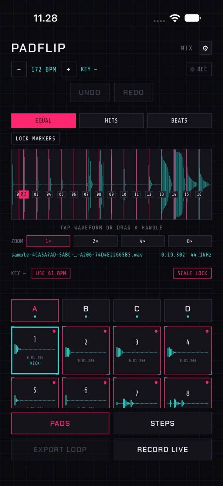
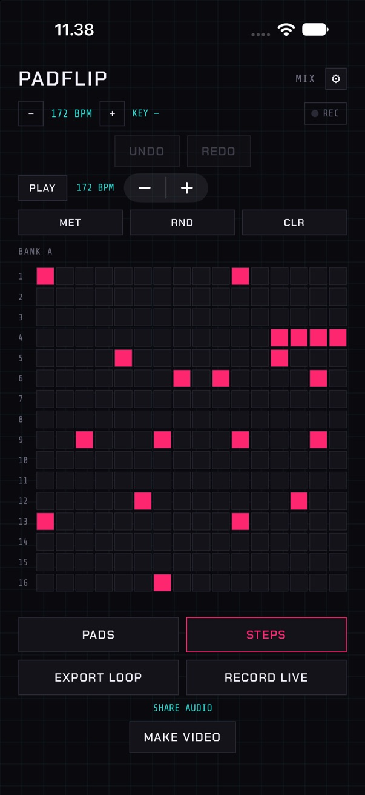
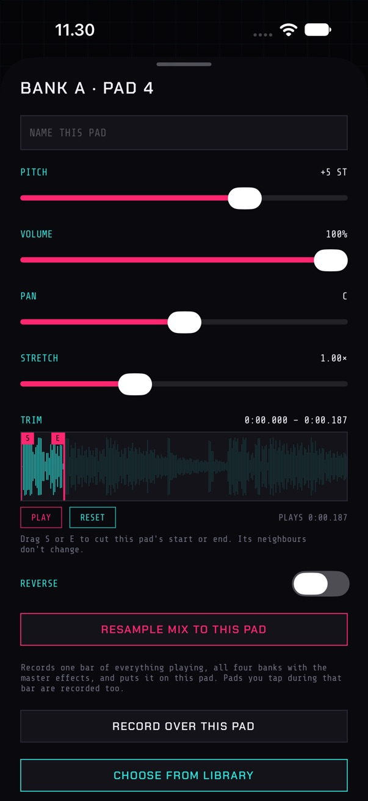
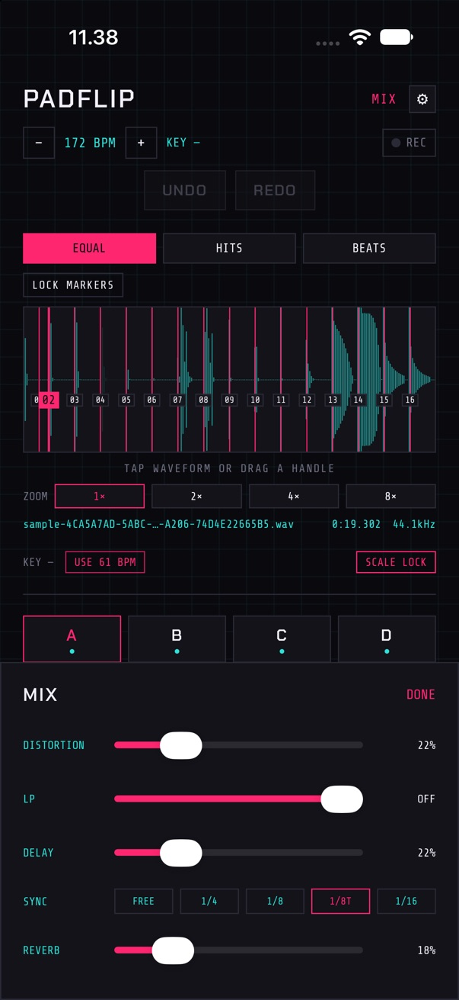

BEATMAKER · IPHONE & IPAD · BETA
Signal in.
Beat out.
Record a sound, import one, or pick from 2,235 included. PadFlip chops it across 16 pads and finds its key and tempo, so the pads are ready to play as soon as the sound loads.
A jungle tune in four moves. Every sound and screen is the app.
HOW IT WORKS
From one sound to a beat
The same four moves as the video, at 172 BPM, using the starter kit that ships with the app.




FEATURES
Everything in the app
All of it comes with the one price, including every sound pack.
Chop it three ways
Equal slices, slices on every hit, or slices on the detected tempo. Drag any cut by hand, zoomed in up to 8×.
It knows the key and tempo
Scale Lock keeps pitched pads in the sample's key. The detected BPM is one tap from becoming your tempo.
Every pad is an instrument
Pitch, stretch, reverse, volume, pan and a name for each of 64 pads. Trim one pad without moving its neighbours.
Timing on the audio clock
The sequencer is scheduled against the audio clock, so the beat stays in time while you scroll, switch apps or lock the phone.
Resample, then go again
Record one bar of everything playing, effects included, onto a pad and build the next layer on top.
2,235 sounds, all included
24 built in plus 72 packs of kicks, bass, percussion, melodic and FX, downloaded one pack at a time.
Learn it by using it
A 60-second walkthrough makes your first beat with you. A one-line tip explains each control the first time you touch it.
Exports that loop cleanly
A WAV exactly one bar long that loops in any DAW, a live take, or a vertical video for short-form posts.
iPhone and iPad
Every iPhone size, and on iPad an inspector beside the page in any orientation. Unlimited projects, 50 steps of undo.
THE PROMISES
Price, privacy and your work
Price
Pay once
Every sound pack is included, including packs added later. No in-app purchases.
Privacy
On your device
No sign-in, no analytics, no tracking. Recordings leave the phone only when you share them. Privacy policy.
Safety
Saved as you go
It saves itself continuously, reopens where you left off, keeps playing in the background, and handles calls and headphone swaps cleanly.
BETA
Help shape it on TestFlight
PadFlip is in beta. Testers get the app free through Apple's TestFlight, try it for fifteen minutes, and tell us what confused them and what's missing. That feedback decides what gets built next.
Open the link on your iPhone or iPad. It installs TestFlight if you don't have it, then PadFlip. Places are limited, so if the beta is full, check back for the next round.
Questions? marian@appsbymarian.dk
What you need
An iPhone or iPad on iOS 17 or later, and Apple's free TestFlight app. No account with us.
Already testing?
Tell us how it went in the five-minute beta survey.
New to it?
The PadFlip guide covers every feature in the order you make a beat.